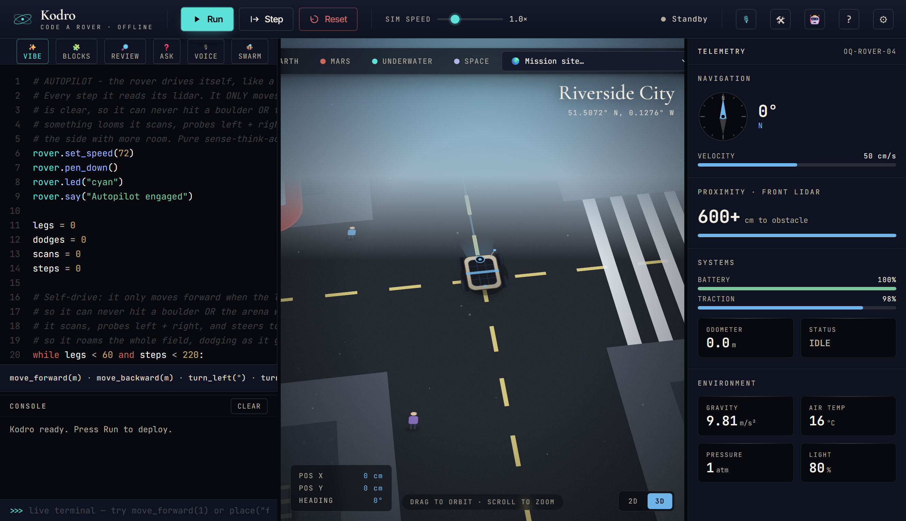
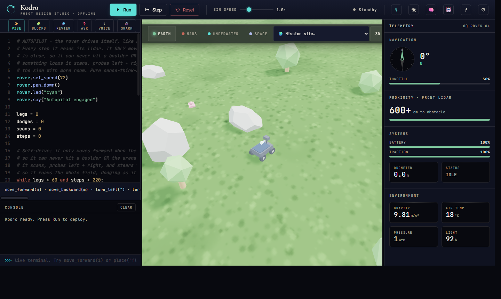

Department of Computer Science · COMP702 MSc Project
University of
Liverpool
Kodro: An Offline, Self-Refining Platform for Designing Robots and Validating Their Behaviour in a Realistic Simulation
Specification and Design Proposal (CA1)
This proposal sets out an offline desktop platform on which a maker designs a custom robot, from a rover to a self-driving car to a home robot or a bare microcontroller build, programs it by code, blocks or voice with grounded artificial intelligence help and an automatic code reviewer, and validates its behaviour in a realistic, agent-populated simulated world before committing to real hardware. The platform self-refines as it is used: it remembers what worked across past designs and reuses it, without ever retraining its model or reaching the internet. It runs entirely on a single machine with no cloud service, no accounts and no per seat cost. The proposal states the aims and measurable requirements, the literature the design rests on, the development approach, the data and ethics position, and a two part evaluation that separates whether a non-expert builds a better behaving robot with the tool from whether the artificial intelligence measurably refines its suggestions as its experience grows.
Name Vaibhav Lalwani
Student ID 201979723
Supervisor Keith Dures
Submission date 19 June 2026
Statement of ethical compliance. The declared categories for this project are data category A0 and participant category 2, and I confirm that I will follow the School's ethical guidance throughout. The evaluation carried out so far uses simulated personas and involves no human participants and no personal data. Any later evaluation that involves real makers will be planned with my supervisor, kept within the permitted activities, and conducted only with appropriate consent and safeguarding. I will update this statement in future assessments if my plans change.
COMP702 CA1 Specification and Design Proposal · Vaibhav Lalwani (201979723) · University of Liverpool
1. Project description
Plenty of people have an idea for a robot and no safe way to try it. Buying parts, wiring a board and writing control code is slow and expensive, and the first time a real robot meets the real world it tends to drive into something. Kodro closes that gap with a single offline download. A user designs a robot in a builder, choosing a chassis, a controller board such as an ESP32 or a micro:bit, and the sensors and motors it carries; programs its behaviour in real Python, in blocks, or by voice, with grounded artificial intelligence help and a second agent that reviews the code; then runs it in a simulated world that behaves like the real one, with terrain, physics and other agents such as pedestrians and traffic moving around it. The user watches how the robot behaves, fixes it, and runs it again, all before spending a penny on hardware.
What makes this research rather than a toy is the layer on top of the simulator. A small artificial intelligence, running on a local model only, helps write and check control code, and it self-refines as the tool is used: after each run it records what happened, keeps a growing library of behaviours that worked, and draws on that experience when helping with the next design. It does this without retraining the model and without ever reaching the internet, so the user's designs never leave the machine. The project asks a sharp question: how much can such a system genuinely refine itself, and how trustworthy can its validation be, under a hard offline constraint that rules out the cloud and rules out changing the model's weights.
2. Aims and requirements
Aims
Build an offline desktop platform on which a non-expert designs a custom robot, programs its behaviour by code, blocks or voice, and validates that behaviour in a realistic, agent-populated simulation before building it for real.
Provide an artificial intelligence layer, on a local model only, that grounds its suggestions in the robot's own capability specification, reviews generated control code for safety, and self-refines from accumulated use through episodic memory and a growing skill library, without retraining the model or reaching the cloud.
Evaluate two separate questions honestly and report what works and what does not. The design question: a non-expert using Kodro should produce a robot that completes at least four of five tasks in a held out realistic scenario it was not tuned on. The self-refinement question: the artificial intelligence should reuse past experience measurably, so that median iterations to a working design fall as its memory grows across a session.
Requirements
Each requirement is given a plain test of done so that progress can be judged rather than asserted. Essential:
Let the user design a custom robot, choosing a board, sensors and actuators, where the specification drives the simulation rather than just decorating it. Done when changing the build measurably changes behaviour: a heavier robot drains its battery faster, a stronger motor set raises top speed, and a fitted sensor unlocks the matching command while an absent one withholds it.
Execute the robot's real Python in a sandbox that blocks file, network and process access, and validate every run against the scenario's success criteria. Done when a hostile program cannot reach the disk and a correct program is scored correctly.
Run the robot in a realistic world with terrain, physics and moving agents, and support repeated runs under varied conditions so behaviour is tested, not assumed. Done when the same program is run across several randomised seeds and a per run report of successes, collisions and time to goal is produced.
Run the artificial intelligence on a local model only, and fall back to rule based behaviour within two seconds when no model is installed, with a calm on screen message rather than a crash. Done when the platform is fully usable with the network switched off and no model present.
Keep every byte of user data on the device, with no outbound request in the code. Done when a network trace during normal use shows no traffic.
Desirable:
A real three dimensional view of the world with first and third person cameras, and worlds ranging from open terrain to a street where the robot must cope with pedestrians and traffic.
A grounded question and answer feature, a voice route into the robot, an automatic code reviewer, and a small swarm that runs one program on several robots at once for tasks about coordination.
A growing skill library of behaviours that worked, which the artificial intelligence reuses across designs, and accessibility options such as a high contrast theme and read aloud.
3. Key literature and background reading
The design rests on three bodies of work, and follows from them rather than sitting beside them: how people learn by building, how a robot tested in simulation can be trusted in the real world, and how a language model can help write and refine code honestly. The first is constructionism (Papert, 1980), the finding that people learn most when they build something they can watch behave and then debug. Kodro is built around exactly that loop: design a robot, run it, watch it fail, fix it. The cost of a richer scene is real and is taken seriously, since cognitive load theory (Sweller, 1988) warns that an elaborate world can spend a beginner's attention on the view rather than the problem, so the three dimensional view and the busy street are treated as desirable, not essential, and earn their place only if they help. Block based programming lowers the entry cost (Resnick et al., 2009; Weintrop and Wilensky, 2017), which is why the tool offers blocks that compile to the same real Python, so a user can move from blocks to text without changing tools.
The second body of work is the reason a simulator is worth trusting at all. The central problem in robotics is the sim to real gap, the drop in performance when behaviour tuned in simulation meets the real world. The standard answer is not a perfect simulator but domain randomization (Tobin et al., 2017): vary friction, mass, sensor noise and the scene across many runs, so behaviour that survives the spread is likely to survive reality too. Kodro adopts this directly, validating each design across randomised seeds rather than a single tidy run, and reporting the spread as honestly as the average. The realistic world also needs other things in it that move with a will of their own; for that the design draws on the social force model of pedestrian motion (Helbing and Molnar, 1995) and reciprocal velocity obstacles for agents that avoid each other and the robot (van den Berg et al., 2008), so a self driving car or a home robot is tested among agents that behave, not among static props.
The third body of work concerns the language model itself, and it is what justifies both the offline choice and the careful framing of self refinement. Huang et al. (2023) show hallucination is intrinsic rather than a bug to be patched, which is dangerous when the output is control code a beginner cannot tell is wrong. The standard mitigation is to ground generation in retrieved sources rather than the model's memory (Lewis et al., 2020); for robots specifically, the model is best constrained to compose a known, safe set of capabilities rather than invent them, in the spirit of programs written against a fixed robot interface (Liang et al., 2023) and of grounding instructions in what the robot can actually do (Ahn et al., 2022). Kodro follows this by grounding every suggestion in the robot's own capability specification, the very build the user assembled, so the model cannot call a sensor that is not fitted. Grounding is also why the cloud is not needed: it works on local material, and a remote call would add a network round trip, an account, and a path for the user's designs to leave the machine, none of which a local model with a retrieved spec requires. On refinement over time the proposal is deliberately careful. Tao et al. (2024) make clear that genuine weight level self evolution is unsolved, so Kodro does not claim it; instead it refines at the level of the system, through the verbal reflection loop of Shinn et al. (2023), where a written record of what helped is fed back into later choices, and through a growing library of behaviours that worked, in the manner of Wang et al. (2023), composed for new designs without ever retraining the model. This is honestly self refining, not self improving in the sense a cloud model retrained on fresh data would be, and the proposal says so plainly. Where several agents cooperate, Cemri et al. (2025) are a sober reminder that naive multi agent setups fail in characteristic ways, which is why a deterministic check, not another model, always has the final word.
4. Development and implementation summary
The platform is written in Python 3.12 and presented through a desktop web view. Each main choice follows from the offline, low resource constraint. The interface is built in React but pre-compiled into a single bundle, so the rich panelled layout is kept while the multi second cost of a runtime compiler is paid once at build time, not on every machine. The three dimensional world is drawn with a vendored copy of the Three.js library held in the project, so the graphics work with the network switched off, which a content delivery network could not promise. A user's designs and the system's accumulated experience are stored in SQLite because it is a single file in the standard library, easy to back up and needing no database server. The artificial intelligence calls a local model served by Ollama, chosen over a bare inference library because it manages model loading and keeps a model warm with one small command. A desktop application, rather than a hosted web service, ties these together and keeps every byte on the machine.
The robot the user designs is not cosmetic; its specification drives the simulation through a single source of truth the rest of the system reads. The chosen board, sensors and motors set the total mass, which scales how fast the battery drains, set the top speed, and decide which commands exist: a build without an ultrasonic sensor simply has no distance reading to call, so the artificial intelligence, grounded in that same specification, cannot suggest one. Behaviour is then validated the way the literature asks, across several randomised seeds with varied friction, mass and sensor noise after Tobin et al. (2017), and in worlds that include moving pedestrians and traffic, so a run reports a spread of successes, collisions and times rather than one tidy number.
The model itself is a small open weight model in the three to four billion parameter range, configured through Ollama with a fixed persona and a short answer limit so it runs on a mainstream laptop without a discrete graphics card; eight gigabytes of memory is the working floor. The fallback is a defined, deterministic path: when no model is present the same functions return rule based code and checks, so the platform stays fully usable. The self refinement is concrete and avoids the unsolved problem of changing the weights, and it is described as refinement, not improvement, on purpose. Three mechanisms, all local, all measurable, carry it. First, after each run the system writes a short reflection on what failed and what worked, and retrieves the most similar past reflections into the next suggestion, after Shinn et al. (2023). Second, control routines that passed validation are kept as named, parameterised skills in a growing library and composed into later designs, after Wang et al. (2023). Third, an experience table of past designs and their outcomes is sampled so advice on a new build is anchored in what actually happened on similar ones. None of this edits the model; the gain is in what the system remembers and reuses, which can be counted, where weight level evolution cannot (Tao et al., 2024).
The work is organised as a sequence of small, independently testable changes. Each is covered by automated tests and is only merged once a continuous integration pipeline runs the full test suite, a type checker and a linter on three operating systems, so the codebase stays releasable at every step. The result is delivered as a single download that installs without administrator rights and runs on Windows, macOS and Linux from the same code, with the local model fetched once through Ollama.
5. Data sources
The project uses no external or open datasets and no personal data. Its content is authored by hand as structured files: a set of starter robots and a set of validation scenarios, each written as a goal the robot must reach plus the success criteria that mark it. The only data generated at runtime is the user's own designs and code, the per run validation results, and the reflections the system writes about them, all stored in the local SQLite file and never sent anywhere. That accumulated record is also the substance of the self refinement: it is the experience the artificial intelligence draws on, and because it is a plain local file the user can inspect it, copy it, or delete it. The local language model is run from weights already present on the device through Ollama, with no call to any remote service. The evaluation activity generates ratings and written feedback, covered in the ethics section below. Beyond this there is no use of personal or third party data.
So the content is shown rather than merely claimed, four representative validation scenarios, the robot each suits, and the design skill each exercises are set out below; the full set extends these across the same robot families.
Validation scenario
Robot it suits
What it makes the user get right
First drive: reach the marker in the right order
Rover
Sequencing, and reading which commands this build actually supports.
Crowded street: cross without hitting a pedestrian
Self-driving car
Sensing and selection; reacting to agents that move with a will of their own.
Fetch and place: pick an object up and set it down
Personal robot or arm
Decomposition into functions; using a fitted gripper and a camera together.
Convoy: one program, several robots at once
Swarm
Coordination and concurrent behaviour without collisions.
6. Testing and evaluation
Testing is automated and continuous. The project currently carries more than eight hundred unit and integration tests at around eighty five percent coverage, with a type checker and linter enforced on every change, so a regression is caught as a failing build rather than by a user. Evaluation proper asks three questions that must not be confused. The first is whether the platform is usable, which the work has tested continuously. The second is whether it actually helps: does a non-expert using Kodro produce a robot that behaves better in a realistic scenario than one designed without it. The third is whether the artificial intelligence genuinely self refines: do its suggestions get better as its experience grows. The usability question is approached with a simulated study, a panel of distinct personas generated to span the makers who might use the tool, each of whom drives the build and rates it. This is a recognised low cost inspection method in the tradition of discount usability and expert inspection (Nielsen, 1994), which trades the authority of real users for breadth and speed, and it is reported with that limit stated plainly rather than dressed up as proof that the platform teaches. It has already been run repeatedly as the work has landed, and the table below records the trajectory.
To make that trajectory readable rather than a bare set of numbers, the method is worth stating plainly. The personas are generated from a single prompt to span four dimensions: background (complete beginner, hobbyist maker, student, teacher, accessibility focused user), experience (from never having wired a board to years of tinkering), access need (dyslexia, low vision, motor difficulty, English as an additional language, colour blindness), and device (an old offline laptop, a shared machine on a locked network, a tablet). Each persona drives one realistic session toward its own goal and returns a mark out of ten, where roughly one to four means it failed them, five to seven means it served them with real gaps, and eight or more means it served them well, alongside the concrete defects it found. The score for a round is the simple mean of its personas, and after each round the named defects were fixed before the same build was re rated, so the trend reflects real change in the product rather than a kinder panel. The panel size varies by purpose, not by convenience: the rounds of fifty are broad sweeps of the whole tool, while the smaller rounds of twelve and eight are focused spot checks of one change, and both are labelled as such. The generation prompt and the four dimensions above are kept in the project so the panel can be regenerated and the result reproduced, which is the honest answer to the charge that a simulated panel is otherwise unrepeatable.
Round
Personas
Focus of the round
Mean rating (out of 10)
1
50
First contact with the build
5.86
2
12
After the first round of fixes
6.50
3
50
After wiring the learner model and teacher tools into the app
7.10
4
50
After grounded answers and the voice route were added
7.36
5
8
Focused review of the new three dimensional world
6.40
The pattern is the point. The first round was deliberately unflattering, and each later round fixed the concrete defects the personas named and then re-rated the same build, lifting the mean from about 5.9 to about 7.4 across the rounds on the core product. The fifth round was a fresh, focused inspection of the newly added three dimensional view, which is why it sits lower; the issues it raised, around readable direction, reduced motion and performance on weak graphics hardware, have since been addressed in the same loop. Future evaluation will add real makers in a field study, under the ethics arrangements described next, since the simulated panel can only stand in for that.
The planned design study
The second question, whether the platform actually helps, is answered by a small design study, sketched here so the design is on record rather than deferred. The plan recruits roughly twelve to twenty non-experts and gives each a held out scenario the platform was not tuned on, for example getting a small robot across a busy crossing. Each participant designs and programs a robot for it, half with Kodro's grounded help and reviewer and half without, the two groups balanced for prior experience. The headline measure is task success in simulation: a design succeeds if the robot completes at least four of five trials of the scenario across randomised seeds, the same bar the aims set. Behaviour quality, collisions per run and iterations to a working design are recorded alongside. This is framed honestly as an exploratory study, not a controlled trial: the numbers are small, allocation is balanced rather than fully randomised, and a novelty effect is expected, so a positive result is read as a signal worth confirming rather than proof. The supervisor will judge whether it fits the window, and the contingency below covers the case where it does not.
The third question, self refinement, is the one most often overclaimed, so it is measured directly rather than asserted. Across a session the same participant tackles a sequence of related scenarios, and the system's experience memory is switched on for one arm and off for an ablated arm. If the memory genuinely helps, the median iterations to a working design should fall as the memory grows, the skill library's reuse rate should rise, and a retrieved reflection should more often precede a successful fix than chance would give. None of these require the model to change; they measure what the system remembers and reuses, which is exactly the honest form the refinement takes (Tao et al., 2024; Shinn et al., 2023).
The artificial intelligence is also measured on its own terms, because a single satisfaction score hides whether it is honest. A fixed set of design questions, with known correct answers drawn from the robot's capability specification, is put to it and three things are counted: how often its answer is correct against the specification, how often it invents a command or part that the build does not have, and how often it correctly refuses and points back to the specification when asked for something out of reach. The bars are set in advance so the result cannot be talked up after the fact: grounded answers must be correct at least eighty five percent of the time and invent content less than five percent of the time, and grounding must clearly beat the same model asked without the specification in front of it. The five percent invention rate is also a release gate: if the assistant invents more often than that, the conversational path is held back and only the deterministic rule based path ships, since a beginner cannot catch unsafe control code that is wrong. These give the AI claims something to stand on beyond a single number.
7. Project ethics and human participants
No human participants have been involved to date. The personas used in the evaluation are generated by software and are clearly reported as a simulation, not as real users, so no consent, recruitment or personal data is involved at this stage. The planned design study does involve people, and it falls under participant category 2. Participants are adult and older makers and students rather than young children, which keeps the safeguarding burden proportionate. Each will be given a plain explanation and asked only to use the software and offer feedback; their data will be anonymised at the point of collection, aggregated for reporting, and never linked to an individual. Where any participant is under eighteen the activity will be arranged through a responsible adult, and the whole study will be agreed with my supervisor, with the appropriate consent in place, before it begins.
One ethical risk is specific to the technology and deserves naming on its own. The output here is not just text but control code for a machine that a user may later build, so a confident falsehood is more than a wrong answer: a model that invents a command or mishandles a sensor could produce code that drives a real robot into a person or a wall. The design treats this as a safety requirement, not a quality nicety. Every suggestion is grounded in the robot's own capability specification so the model cannot call a part the build does not have, the assistant is instructed to refuse and point back to that specification rather than guess, and any code it produces runs first inside the sandboxed simulation and is checked against the scenario before a user could trust it, so a wrong suggestion fails visibly on screen rather than on a real robot. The mandatory simulation gate, not the model, is what stands between a generated program and the real world, and the assistant is framed throughout as a helper to think with, not an authority to copy.
Four smaller points complete the picture. The model's generated code and explanations will be spot checked for biased or unsuitable content before release, since even a small model can carry it. The interface targets keyboard only use and a screen reader, with the accessibility options treated as requirements for the diverse makers the tool is meant for, not as extras. The offline design, while it protects privacy, could in principle widen a gap for those with the weakest hardware, so the minimum machine is kept deliberately low and stated openly. Finally, because a user's work and the system's memory stay in a single local file, deletion is simply removing that file, and any data gathered in the study will be deleted once the dissertation is marked. There are no other special ethical considerations for the project.
8. BCS project criteria
The project is intended to meet the six BCS honours project outcomes as follows.
BCS outcome
How the project meets it
Systematic understanding and critical awareness at the forefront of the discipline
The design engages directly with current problems: hallucination and grounding in language models, honest offline self refinement, and the sim to real gap in robotics.
Comprehensive understanding of applicable techniques
Retrieval grounding, a deterministic sandbox gate, domain randomization, and a memory and skill library refinement loop are selected and justified against the literature.
Originality in the application of knowledge
The novelty is delivering grounded code help, honest self refinement and realistic validation entirely offline on one machine, which the cloud robotics tools do not attempt.
Handle complex issues and communicate to specialist and non specialist audiences
The work balances competing constraints and is documented for both a maker and an examiner, as in this proposal.
Self direction and originality in solving problems autonomously
The project is planned, built and tested independently, with a continuous integration gate evidencing the process.
Critical self evaluation of the process
The evaluation is reported honestly, including weak first results and the fixes that followed, rather than only the best numbers.
It is worth being honest about where the originality really sits. The individual parts, retrieval grounding, a sandboxed gate, an experience memory, a skill library and domain randomization, are each known techniques, and the offline constraint actively limits how clever any one of them can be, since the strongest models are out of reach. The contribution is therefore not a new algorithm but the demonstration that these parts can be combined into an honest, useful design and validation platform that runs entirely on one machine, and a measured account of how far offline self refinement can actually go when changing the weights is off the table. The constraint is the point, not a limitation to apologise for.
9. UI/UX mockup
The user's path is a short loop that the interface makes concrete: design, program, validate, refine. It opens in the Robot Lab, shown in Figure 1, where the user picks a robot, fits a board, sensors and motors, and watches the build's mass, battery life and supported commands update as they go. From there the main window is a single screen with the code editor and console on the left, the world in the centre, and live telemetry on the right. The artificial intelligence is not a separate screen but lives inside this layout: a suggestion appears as a single line beneath the console, grounded in the build the user just assembled and never offered as a finished answer; the grounded question box answers from the robot's specification with the passage it drew on shown beside the reply; the voice route is one button that turns speech into the same robot commands; and the swarm is a toggle that runs one program on several robots at once. The figures below show the working interface and stand in for a wireframe, kept in colour so it reads as it really looks.
Figure 1. The Robot Lab. The user designs a custom robot, here a self-driving car, and the build's mass, battery life and supported commands update live; the specification then drives the simulation.

Figure 2. Validation in a realistic world. The designed robot runs in Riverside City, a street with road markings, a crossing, buildings, moving pedestrians and traffic, so its behaviour among other agents can be watched before any hardware is built.

Figure 3. Programming. The user writes Python on the left and watches the robot carry it out, with the grounded assistant and code reviewer one click away.
The loop then repeats: read the result, fix one thing, run again, and let the system remember what worked. The same panels serve a teacher or mentor through a progress view, and an access focused user through the high contrast theme and read aloud in the same menu. The design holds to one accessibility standard, WCAG 2.1 AA: every action reachable by keyboard alone, text contrast meeting the AA ratio, the three dimensional view honouring the system reduced motion setting, and the read aloud and high contrast options for low vision and dyslexia. These are listed as things the build must pass, and the design study deliberately includes makers with these access needs so the claims are checked against real use, not only asserted.
10. Project plan
The plan runs from the proposal to the final dissertation, with the two later assessments and the write up built in. The stages, their order, and the points where they overlap or depend on each other are set out in the table below. Supervisor meetings run on a fortnight cycle throughout the project.
Stage
Start
Finish
Duration
Depends on
Specification and design (CA1)
Early June
19 June
3 weeks
Project allocation
Ethics approval for the design study
Mid June
Mid July
4 weeks
Supervisor sign off; started early for recruitment lead time
Core build and AI layer
Early June
Late July
7 weeks
Runs alongside CA1
Realistic worlds, agents, voice and swarm
Mid July
Mid August
5 weeks
Core build
Demonstration video (CA2)
Mid August
21 August
1 week
Core build, worlds
Field design study
Mid August
Early September
3 weeks
Working build, ethics approval
Dissertation write up (CA3)
Late August
Mid September
4 weeks
Study results; overlaps the study tail with a buffer
The critical path runs through ethics approval into the design study and on into the write up, which is why approval is started in June rather than left late: recruiting participants can take several weeks. The write up begins during the study, on the parts that do not need its results, and a deliberate buffer sits before the final deadline. If approval or participants cannot be secured in time, the project falls back to the simulated persona panel and the offline self refinement and AI measurements above, which need no participants, and the dissertation reports that honestly rather than stalling.
11. Risks and contingency plans
Risk
Contingency
Likelihood
Impact
Hardware failure or lost work
All code is committed to a remote repository on every change; the database is a single file that copies easily.
Low
High
Local model too weak for some suggestions
Grounding keeps suggestions tied to the robot's specification, and the model refuses rather than guesses; a more capable local model can be configured.
Medium
Medium
Generated control code is unsafe
Nothing reaches a real robot unchecked: every program runs first in the sandboxed simulation against the scenario, and grounding plus the code reviewer catch invented or unsafe commands before that.
Medium
High
Sim to real gap: behaviour that passes in simulation fails on real hardware
Domain randomization tests each design across varied seeds, and the platform is framed as validation and rehearsal, not a guarantee; the spread is reported, not hidden.
Medium
Medium
Field study cannot be arranged in time
The simulated persona panel and the offline self refinement measurements give broad coverage as a fallback, and the dissertation reports it honestly as such.
Medium
Medium
Ethics approval or participant recruitment is delayed
Approval is sought in June with lead time built in; if it slips, the project runs the participant free evaluations instead and the write up is not blocked.
Medium
Medium
Running out of time
The build is kept releasable at every step, so an earlier version is always a valid deliverable.
Medium
High
Software defects reaching users
A continuous integration gate runs the full test suite, type checker and linter before any change is merged.
Low
Medium
12. References
Ahn, M., Brohan, A., Brown, N. et al. (2022) Do as I can, not as I say: grounding language in robotic affordances. arXiv:2204.01691.
Cemri, M., Pan, M.Z., Yang, S. et al. (2025) Why do multi-agent LLM systems fail? arXiv:2503.13657.
Helbing, D. and Molnar, P. (1995) Social force model for pedestrian dynamics. Physical Review E, 51(5), pp. 4282 to 4286.
Huang, L., Yu, W., Ma, W. et al. (2023) A survey on hallucination in large language models. ACM Transactions on Information Systems (arXiv:2311.05232).
Lewis, P., Perez, E., Piktus, A. et al. (2020) Retrieval augmented generation for knowledge intensive NLP tasks. Advances in Neural Information Processing Systems, 33.
Liang, J., Huang, W., Xia, F. et al. (2023) Code as policies: language model programs for embodied control. IEEE International Conference on Robotics and Automation (ICRA).
Nielsen, J. (1994) Usability engineering. San Francisco: Morgan Kaufmann.
Papert, S. (1980) Mindstorms: children, computers, and powerful ideas. New York: Basic Books.
Resnick, M., Maloney, J., Monroy-Hernandez, A. et al. (2009) Scratch: programming for all. Communications of the ACM, 52(11), pp. 60 to 67.
Shinn, N., Cassano, F., Berman, E. et al. (2023) Reflexion: language agents with verbal reinforcement learning. arXiv:2303.11366.
Sweller, J. (1988) Cognitive load during problem solving: effects on learning. Cognitive Science, 12(2), pp. 257 to 285.
Tao, Z., Lin, T.E., Chen, X. et al. (2024) A survey on self evolution of large language models. arXiv:2404.14387.
Tobin, J., Fong, R., Ray, A. et al. (2017) Domain randomization for transferring deep neural networks from simulation to the real world. IEEE/RSJ International Conference on Intelligent Robots and Systems (IROS), pp. 23 to 30.
van den Berg, J., Lin, M. and Manocha, D. (2008) Reciprocal velocity obstacles for real-time multi-agent navigation. IEEE International Conference on Robotics and Automation (ICRA), pp. 1928 to 1935.
Wang, G., Xie, Y., Jiang, Y. et al. (2023) Voyager: an open-ended embodied agent with large language models. arXiv:2305.16291.
Weintrop, D. and Wilensky, U. (2017) Comparing block based and text based programming in high school computer science classrooms. ACM Transactions on Computing Education, 18(1), Article 3.
Appendix A. Persona generation and rating scale
This appendix records the method behind the usability figures so the simulated panel can be reproduced rather than taken on faith. Each round generates a set of personas from the instruction below, then runs each one against the current build.
Generate a distinct user persona for an offline tool where a maker designs a robot, programs it, and validates it in a simulated world. Vary the persona across four dimensions so the set as a whole spans real use:
background: complete beginner, hobbyist maker, student, mentor or teacher, or accessibility focused user;
experience: from never having wired a board to years of tinkering;
access need: dyslexia, low vision, motor difficulty, English as an additional language, or colour blindness;
device: an old offline laptop, a shared machine on a locked network, or a tablet.
Give the persona one realistic goal for a single session. Walk that session, then return a mark out of ten and the concrete defects that held it back.
The mark uses a fixed scale so scores mean the same thing across rounds: 1 to 4, the tool failed this person and they could not reach their goal; 5 to 7, it served them but with real gaps they named; 8 to 10, it served them well with only minor friction. The score for a round is the mean of its personas, and the named defects feed the next round of fixes. The prompt and these bands are kept in the project so a later reader can regenerate the panel and check the result.
Generative artificial intelligence assisted the development of the software and the drafting of this document, which is acknowledged in line with University guidance. All technical claims describe the working system, the evaluation figures are reported as measured, and the references were checked at the time of writing.